Proprietary to General Electric
Direction 5193575-800, Rev# 5
LightSpeed 7.X Service Information - Adv
Proprietary to General Electric |
| Last Revised: | 14 September 2006 |
The following tests may be utilized as required after Operator Console diagnostic tests have been executed.
VDIP verification through the PCI Riser Card
Advanced Path Isolation Test between Gantry components and VDIP
V/DARC Node memory check [root@darc] lhinv
VDIP verification through the PCI Riser Card [root@darc] cat /proc/driver/gemsvdip
VDIP diagnostic test without loopback cabling installed [root@darc] vdip_menu –A
Verification that the fiber optic cabling is not damaged
Fiber optic internal cabling test and path verification
Fiber optic internal connection check internal to the Operator Console (near the Rear Bulkhead Assembly)
VDIP diagnostic test with loopback test cables using one of these methods:
Standalone: Connected directly between Channel 1 / Channel 2 RX and TX ports at VDIP Board
Internal: Connected from J52 up to the Channel 1 / 2 TX ports located at the rear of the VDARC Node
Illustration 1: VCT Fiber Optic Path Diagram
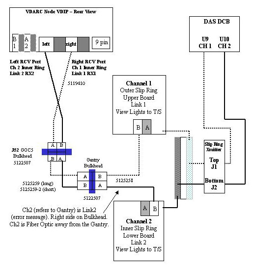
| NOTE: | An error message that states Link # [No sync] indicates problems between VDIP and the Inner/Outer Slip Ring. |
| NOTE: | To troubleshoot from DCB through Slip Ring Transmitter to Inner & Outer Slip Ring Boards, verify the Inner/Outer Slip Ring Boards have lights lit. The error message states No sync detected from DAS. (It does not reference Link 1 or 2.) |
| NOTE: | LightSpeed 32 systems use only ONE (1) VDIP channel. |
Overview:
Refer to Illustration 1. The Slip Ring to VDIP Troubleshooting test is usually performed with Application Software DOWN. The “no loopback” VDIP diagnostic [root@darc]vdip_menu –A command will be performed and the user will visually verify the DISPLAY window box selections change (from red to green and possibly back to red). The goal is to have each component toggle to green at least once momentarily during the test.
Some components of the DISPLAY may be toggled per the notes in Table 1 for DDC Scan.
| NOTE: | For this test, if VDIP fiber optic cable #1 has an issue, then
RX2 status will stay red and display Not Connected. If VDIP fiber optic cable #2 has an issue, then RX1 status will stay red and display Not Connected. |
Table 1: Slip Ring to VDIP Display Tool Explanation
| DESCRIPTION | OUTPUTS IN GREEN OR RED |
| (Green is shown first if there is more than one option.) | |
| BIST | No Error or Error Detected |
| 1.8V Power | Okay |
| Scan Abort Relay | Closed or Open |
| (Note: Set up a scan or DDC scan for Closed.) | |
| Scan Enable Cable | Connected or Not Connected |
| RX1 Optical Signal | Detected or Not Detected |
| (Detected when VDIP Ch2 path is okay) | |
| RX1 Sync Packets | Detected or Not Detected |
| (Note: Accept a DDC scan for momentary Detected) | |
| RX2 Optical Signal | Detected or Not Detected |
| (Detected when VDIP Ch1 path is okay) | |
| RX2 Sync Packets | Detected or Not Detected |
| (Note: Accept a DDC scan for momentary Detected) |
Verify Application Software is down.
From the Toolchest, open two Unix Shell windows.
Put the cursor in Unix Shell window #1.
{ctuser@hostname} rsh darc
Last login: Fri Jun 2 17:15:24from oc
{ctuser@darc} su -
Password: #bigguy
[root@darc]# lsmod | grep -c dip
1 << Shows vdip as present. If the output is 0, then the vdip is not seen by the VDARC.
[root@darc]# exit
{ctuser@darc} exit
| NOTE: | Certain 06MWxx.xx software releases may be able to utilize the
following command instead of using the xhost, rsh
darc, and dipstatus commands to invoke the GUI: {ctuser@hostname} ssh -Y darc dipstatus - OR - {root@hostname} ssh -Y darc dipstatus |
{ctuser@hostname} xhost +
access control disabled, clients can connect from any host
{ctuser@hostname} rsh darc
{ctuser@darc} dipstatus
Ignore the Runtime Warning. The last line of output to appear will be:
fd is 5 in vdip.cvar.fd
Put the cursor in Unix Shell window #2.
{ctuser@hostname} su -
Password: #bigguy
[root@hostname]# rsh darc
Last login: Fri Jun 2 18:02:17 from oc
[root@darc]# vdip_menu -A
fd is 4 in vdip.cvar.fd Loop 1: PASSED - 1 - Read Configuration Space Header PASSED - 2 - Read contents of Board ID and PCI Rev. PASSED - 3 - Read contents of Registers PASSED - 4 - Data Pattern Test of SRAM A PASSED - 5 - Data Pattern Test of SRAM B PASSED - 6 - Walking Bit Test of SRAM A PASSED - 7 - Walking Bit Test of SRAM B PASSED - 8 - Address Pattern Test of SRAM A PASSED - 9 - Address Pattern Test of SRAM B PASSED - 10 - Read Test of FLASH PASSED - 11 - Relay Loopback Test Loop 1: PASSED - 14 - DMA Test PASSED - 15 - DMA Band Width Test PASSED - 16 - Memory Test PASSED - 17 - Interrupt Test *********************************************************** RESULTS 0 of 2 Loops Contain Failures ALL TESTS PASSED ***********************************************************
Unix Shell window #1 output message shows:
fd is 5 in vdip.cvar.fd VDIPIO_GET_BOARD_STATUS: No such device VDIPIO_GET_BOARD_STATUS: No such device VDIPIO_GET_BOARD_STATUS: No such device
Illustration 2: RX1 Slip Ring to VDIP Status Issue
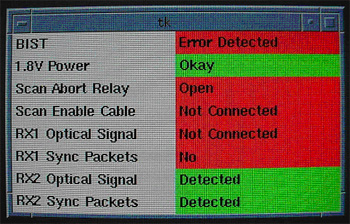
Overview:
List of test setup requirements:
User must be successful in performing the remote shell (rsh) process to the V/DARC Node.
Verification of presence and accessibility of the VDIP Board in the V/DARC Node through the internal PCI Riser Card
Main memory size verification using the lhinv command
Successful performance of one loop/pass of the VDIP ‘No Loopback’ diagnostic command [root@darc] vdip_menu –A
Verify Application Software is down. If not, shut down Application Software.
From Toolchest, open a Unix Shell.
{ctuser@hostname} rsh darc
{ctuser@darc} su -
Password: #bigguy
[root@darc ~]# lhinv | grep Main
Verify the Main memory size is correct.
[root@darc ~]# cat /proc/driver/gemsvdip
Verify that some output is shown and the Board Physical Identifier is correct.
[root@darc ~]# vdip_menu -A
Verify: ALL TESTS PASSED
Overview:
For the internal cable verification test, the tester must successfully perform a flashlight check. This flashlight check provides the ability to isolate an internal bad fiber optic cable within the Operator Console.
Additionally, the tester must understand the actual cabling path within the Operator Console and must be alert to issues relating to poor connection or improper click-in of the fiber optic cable(s) that exist internal and/or external to the Rear Bulkhead Assembly.
| NOTE: | Fiber optic cabling is fragile. Do not pull, bend or step on the
fiber optic cables. All fiber optic cables must be squeezed at the connector to disconnect properly. Do not pull on the fiber optic cables. Illustration 3: Squeezing the Tab for Removal 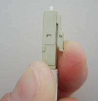 |
Procure a flashlight for internal fiber optic path testing.
At the Operator Console Rear Bulkhead Assembly, disconnect the J52 fiber optic cable set (from the Gantry) and carefully set this fiber optic cabling aside.
Illustration 4: J52 Console Bulkhead
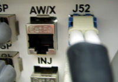
Disconnect the VDIP left Channel 1 RX port fiber optic cable from the rear of the V/DARC Node.
Illustration 5: VDIP Channels 1 & 2 RX Fiber Optic Cables, Connected
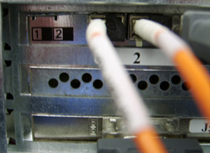
Illustration 6: VDIP Channels 1 & 2 RX Fiber Optic Cables, Disconnected
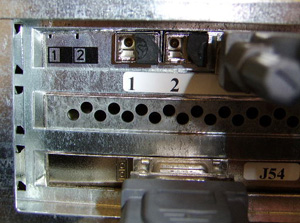
Shine the flashlight down the Channel 1 RX internal cable and verify the light is seen at the rear Operator Console Bulkhead J52 RIGHT fiber optic cable connection point.
If the light is visible, reconnect the Channel 1 RX port cable to the Channel 1 RX VDIP port on the rear of the V/DARC Node. Verify the fiber optic cable clicks properly into place.
Disconnect the VDIP right Channel 2 RX port fiber optic cable from the rear of the V/DARC Node.
Shine the flashlight down the Channel 2 RX internal cable and verify the light is seen at the Rear Operator Console Bulkhead J52 LEFT fiber optic cable connection point.
If the light is visible, reconnect the Channel 2 RX port cable to the Channel 2 RX VDIP port on the rear of the V/DARC Node. Verify the fiber optic cable clicks properly into place.
Physically verify each RX fiber optic cable is clicked securely into place internal to the Operator Console at the Rear Bulkhead Interface Panel Assembly at J52.
Reconnect the J52 Gantry fiber optic cable set at the Operator Console Rear Bulkhead Assembly.
Overview:
The VDIP Loopback Diagnostic test requires the connection of an external Loopback Cable set. The [root@darc] vdip_menu –a command is performed for this test. The test setup requires that the VDIP board is present and cable path checks are proper. (Fiber optic cabling is not swapped.)
If the VDIP loopback test fails when using the internal Operator Console fiber optic cables, the external loopback cables may be placed directly between the RX and TX ports for each channel (Channel 1 and Channel 2) to isolate the VDIP Board from the internal Operator Console fiber optic cabling that connects internally to the Rear Bulkhead Interface Panel Assembly at J52. The bypass internal fiber optic cable test and setup is not discussed.
| NOTE: | Fiber optic cabling is fragile. Do not pull, bend or step on the
fiber optic cables. All fiber optic cables must be squeezed at the connector to disconnect properly. (See Illustration 3.) Do not pull on the fiber optic cables. |
At the Operator Console Rear Bulkhead Assembly, disconnect the J52 fiber optic cable set (from the Gantry) and carefully set this fiber optic cabling aside.
Illustration 7: J52 Console Bulkhead
Locate the external VDIP fiber optic loopback cable test set. The loopback test cables should be separated and labeled per Section 8.
Shine a light into the Channel 1 fiber optic test cable and verify the light is seen at the other end.
Shine a light into the Channel 2 fiber optic test cable and verify the light is seen at the other end.
Connect one end of the Channel 1 Test cable to the Channel 1 TX port at the rear of the VDIP.
Illustration 8: Preferred Loopback Test
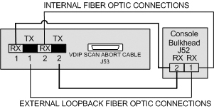
Illustration 9: VDIP TX Loopback Cabling Installed
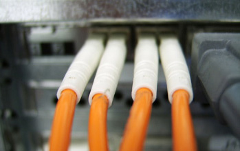
Illustration 10: Bulkhead Loopback Cabling Installed
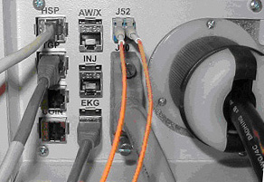
Connect the other end of the Channel 1 Test cable to the Operator Console Rear Bulkhead fiber optic connection – right side (as viewed from the rear).
Connect one end of the Channel 2 Test cable to the Channel 2 TX port at the rear of the VDIP.
Connect the other end of the Channel 2 Test cable to the Operator Console Rear Bulkhead fiber optic connection – left side (as viewed from the rear).
The system is now ready to perform the VDIP loopback test.
Verify Application Software is down.
Open a Unix Shell from the Toolchest and perform the following commands.
{ctuser@hostname} rsh darc
{ctuser@darc} su -
Password: #bigguy
[root@darc ~]# vdip_menu –a
| NOTE: | If the VDIP loopback test fails, re-verify all fiber optic connections
are properly clicked into place. If it still fails, refer to Section 9 and connect the external loopback fiber optic cables between their respective RX and TX ports for their specific channel (bypassing the internal VDIP fiber optic cables/connector.) |
When the loopback test has completed, verify the VDIP fiber optic cables are properly connected and fully clicked in place for each Channel RX port connection at the rear of the VDARC Node on the VDIP.
Verify the VDIP fiber cables are properly connected and fully clicked in at the Operator Console Bulkhead Assembly.
Reconnect the J52 Gantry fiber optic cable set at the Operator Console Rear Bulkhead Assembly.
Verify the Slip Ring to VDIP Test passes.
| NOTE: | Fiber optic cabling is fragile. Do not pull, bend or step on the fiber optic cables. |
Disconnection: All fiber optic cables must be squeezed at the connector to disconnect properly. See Illustration 3. Do not pull on the fiber optic cables. Several fiber optic cable illustrations are shown in this document.
Connection: Whenever connecting a fiber optic cable or fiber optic cable set, verify the cable clicks in fully. In most cases, an audible click can be heard if the environment is not too noisy.
The fiber optic loopback test cables may arrive connected at each end with plastic pieces that hold the set together. If so, carefully separate the cable pairs by removing the plastic pieces at both ends of the cable set and then cut any labeling that holds the loopback test set cables together.
Illustration 11: Loopback Fiber Optic Test Set
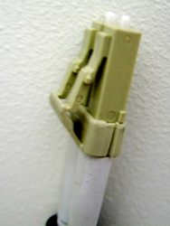
Illustration 12: Individual Fiber Optic Cables
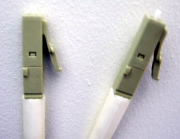
Label each end of the fiber optic loopback test cables. Label the first cable as #1 at both ends. Label the second cable as #2 at both ends.
Illustration 13 provides the setup required to test the VDIP board loopback circuitry in a standalone/bypass manner. The Operator Console internal fiber optic cabling is disconnected at the rear of the V/DARC Node VDIP Board for each Channel / RX port.
Illustration 13: Bypass Cabling Loopback Test
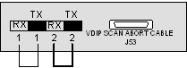
Connect the fiber optic cabling as shown in Illustration 13.
Verify Application Software is down.
Open a Unix Shell from the Toolchest and perform the following commands.
{ctuser@hostname} rsh darc
{ctuser@darc} su -
Password: #bigguy
[root@darc ~]# vdip_menu –a
| NOTE: | If the VDIP loopback test fails, re-verify all fiber optic connections are properly clicked into place. |
When the loopback test has completed, verify the VDIP fiber optic cables are properly connected and fully clicked in place for each Channel RX port connection at the rear of the VDARC Node on the VDIP.
Verify the VDIP fiber cables are properly connected and fully clicked in at the Operator Console Bulkhead Assembly.
Verify the J52 Gantry fiber optic cable set is properly connected at the Operator Console Rear Bulkhead Assembly.
Verify the Slip Ring to VDIP Test passes.
The following illustrations provide connection information for the V/DARC Node production types available (Jarrell or Westville).
Illustration 14: 5119833 Jarrell V/DARC Node Rear View Photo
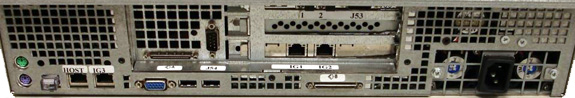
Illustration 15: 5119833 Jarrell V/DARC Node Rear View Diagram

Illustration 16: 5114523 Westville V/DARC Node Rear View Photo

Illustration 17: 5114523 Westville V/DARC Node Rear View Diagram